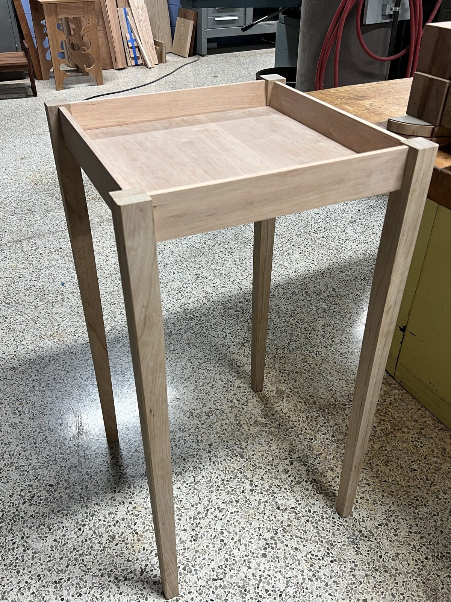
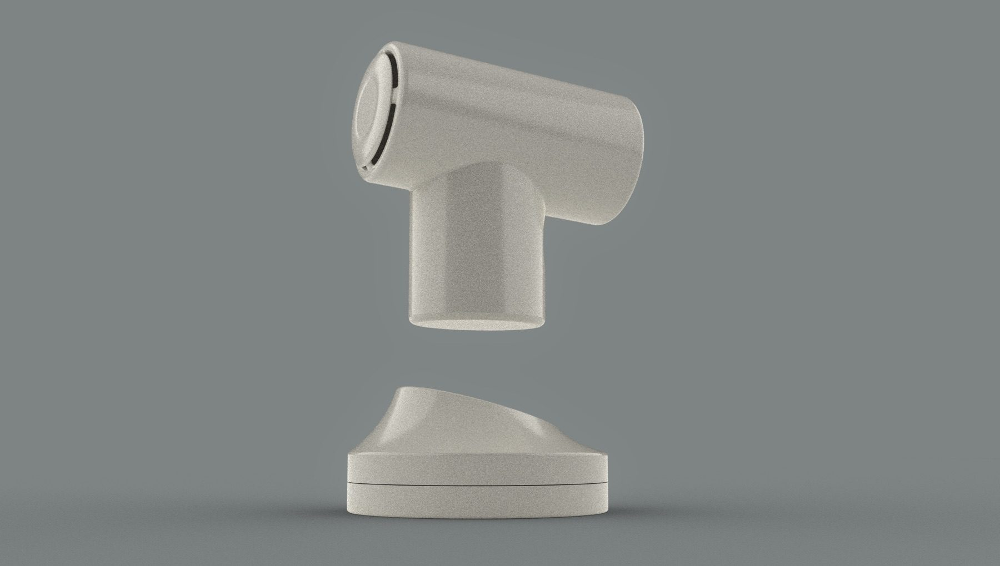
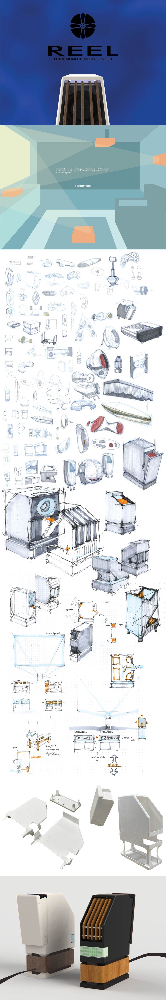
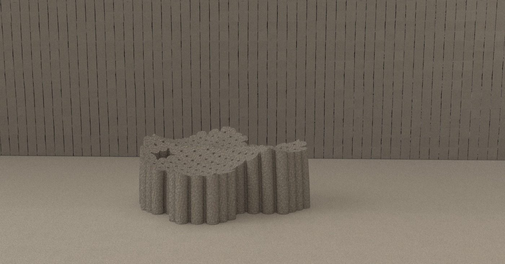
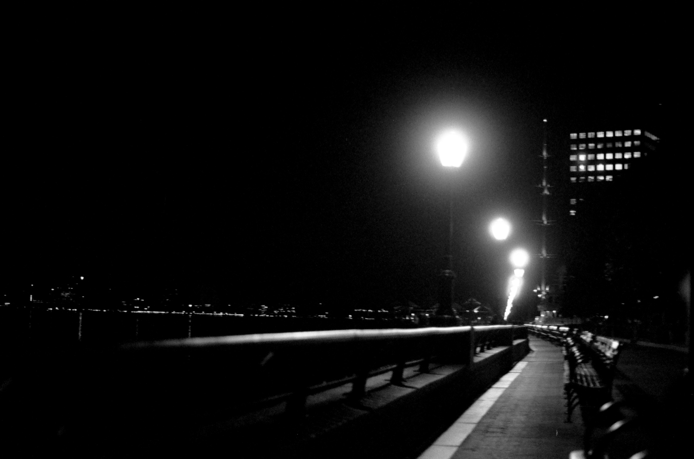
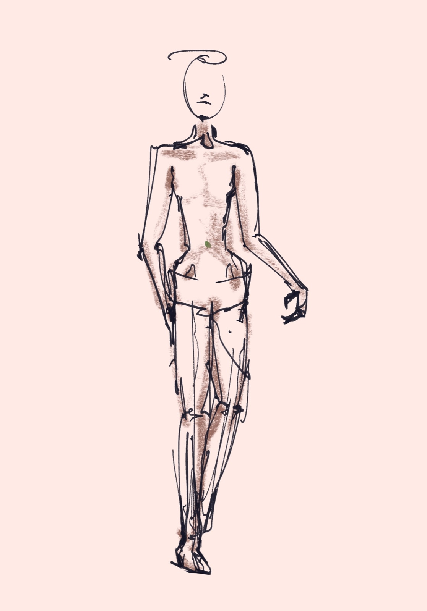
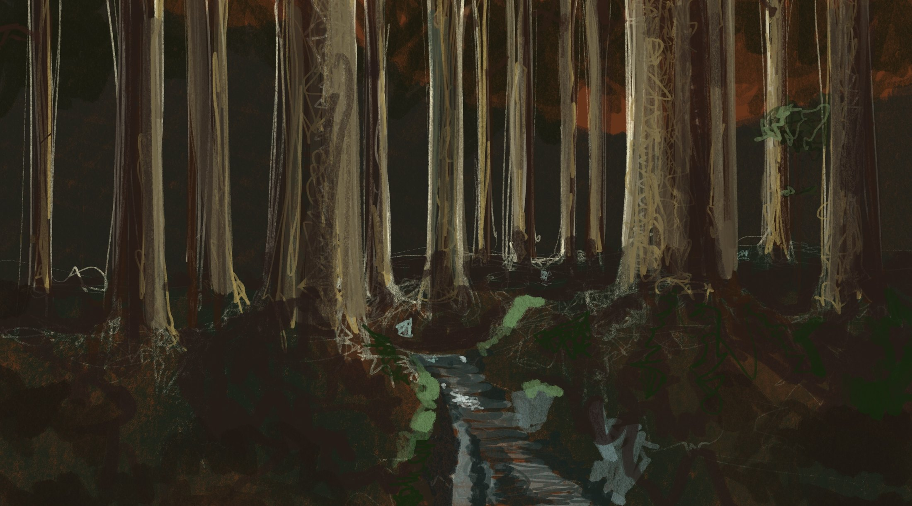
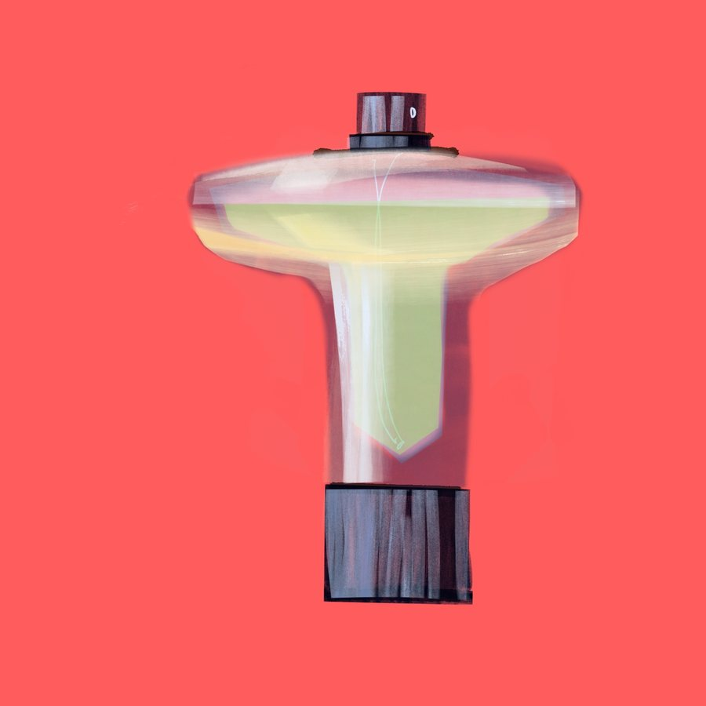

Woodshop
Table Construction
A furniture study in proportion, joinery, clamping, and exposed construction details.
Selected Work
Furniture, product concepts, drawings, paintings, photographs, and sculptural studies sit together as one body of work.

A furniture study in proportion, joinery, clamping, and exposed construction details.

A compact appliance concept developed through CAD surfacing and rendering.

Sketches, form-factor exploration, and polished render language for a projector concept.

Sculptural vessels and bottle studies focused on silhouette and repeated volume.

Black and white film photographs focused on framing, contrast, and atmosphere.

Gesture, pose, proportion, and wearable silhouettes worked through line.
Digital Paintings
Finished digital paintings grouped by subject matter, with landscapes, vessels, drapery, and figure drawings separated into their own galleries.

Terrain, forest, water, and architecture as color and spatial mood.

Small object silhouettes, translucency, reflection, and product-scale proportion.

Translucent folded forms, soft edges, and fabric as sculptural object.
Gesture, pose, proportion, and wearable-form ideas worked through line.